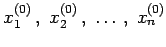

Inhalt Index DeskTop Bronstein

 Numerische Mathematik Numerische Lösung von Gleichungssystemen Nichtlineare Gleichungssysteme
Numerische Mathematik Numerische Lösung von Gleichungssystemen Nichtlineare Gleichungssysteme


Das gewöhnliche Iterationsverfahren geht davon aus, daß sich die Gleichungen (19.55) auf eine Fixpunktform
| (19.56) |
bringen lassen. Dann erhält man, von den geschätzten Näherungswerten  ausgehend, verbesserte Werte durch
| = | |||
| (19.57) |
| = | |||
| (19.58) |
Für die Güte der Konvergenz dieser Verfahren ist ausschlaggebend, daß die Funktionen fi in der Umgebung einer Lösung möglichst schwach von den Unbekannten abhängen, d.h., falls die fi differenzierbar sind, müssen die Beträge der partiellen Ableitungen möglichst klein sein. Als Konvergenzbedingung erhält man
| (19.59) |
Mit dieser Größe K gilt die Fehlerabschätzung
Dabei sind xi die Komponenten der gesuchten Lösung, und die zugehörigen  -ten und -ten Näherungen.
-ten und -ten Näherungen.